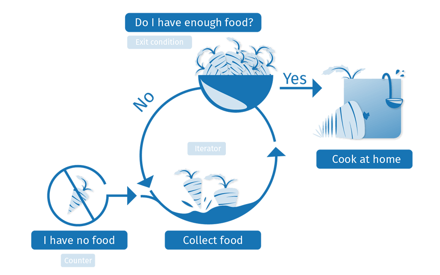

Programming languages are very useful for rapidly completing repetitive tasks, from multiple basic calculations to just about any other situation where you've got a lot of similar items of work to complete. Here we'll look at the loop structures available in JavaScript that handle such needs.
| Prerequisites: | Basic computer literacy, a basic understanding of HTML and CSS, JavaScript first steps. |
|---|---|
| Objective: | To understand how to use loops in JavaScript. |
Keep me in the loop
Loops, loops, loops. As well as being associated with popular breakfast cereals, roller coasters and musical production, they are also a critical concept in programming. Programming loops are all to do with doing the same thing over and over again — which is termed iteration in programming speak.
Let's consider the case of a farmer that is making sure he has enough food to feed his family for the week. He might use the following loop to achieve this:

A loop usually has one or more of the following features:
- A counter, which is initialized with a certain value — this is the starting point of the loop ("Start: I have no food", above).
- An exit condition, which is the criteria under which the loop stops — usually the counter reaching a certain value. This is illustrated by "Have I got enough food?", above. Let's say he needs 10 portions of food to feed his family.
- An iterator, which generally increments the counter by a small amount on each successive loop, until it reaches the exit condition. We haven't explicitly illustrated this above, but we could think about the farmer being able to collect say 2 portions of food per hour. After each hour, the amount of food he has collected is incremented by two, and he checks whether he has enough food. If he has reached 10 portions (the exit condition), he can stop collecting and go home.
In pseudocode, this would look something like the following:
loop(food = 0; foodNeeded = 10) {
if(food = foodNeeded) {
exit loop;
// We have enough food; let's go home
} else {
food += 2; // Spend an hour collecting 2 more food
// loop will then run again
}
}
So the amount of food needed is set at 10, and the amount the farmer currently has is set at 0. In each iteration of the loop we check whether the amount of food the farmer has is equal to the amount he needs. If so, we can exit the loop. If not, the farmer spends an hour collecting two portions of food, and the loop runs again.
Why bother?
At this point you probably understand the high level concepts behind loops, but you are probably thinking "OK, great, but how does this help me write better JavaScript code?" As we said earlier, loops are all to do with doing the same thing over and over again, which is great for rapidly completing repetitive tasks.
Often, the code will be slightly different on each successive iteration of the loop, which means that you can complete a whole load of tasks that are similar but slightly different — if you've got a lot of different calculations to do, you want to do each different one, not the same one over and over again!
Let's look at an example to perfectly illustrate why loops are such a good thing. Let's say we wanted to draw 100 random circles on a <canvas> element (press the Update button to run the example again and again to see a different random sets):
Hidden code
<!DOCTYPE html>
<html>
<head>
<meta charset="utf-8">
<title>Random canvas circles</title>
<style>
html {
width: 100%;
height: inherit;
background: #ddd;
}
canvas {
display: block;
}
body {
margin: 0;
}
button {
position: absolute;
top: 5px;
left: 5px;
}
</style>
</head>
<body>
<button>Update</button>
<canvas></canvas>
<script>
var btn = document.querySelector('button');
var canvas = document.querySelector('canvas');
var ctx = canvas.getContext('2d');
var WIDTH = document.documentElement.clientWidth;
var HEIGHT = document.documentElement.clientHeight;
canvas.width = WIDTH;
canvas.height = HEIGHT;
function random(number) {
return Math.floor(Math.random()*number);
}
function draw() {
ctx.clearRect(0,0,WIDTH,HEIGHT);
for(var i = 0; i < 100; i++) {
ctx.beginPath();
ctx.fillStyle = 'rgba(255,0,0,0.5)';
ctx.arc(random(WIDTH), random(HEIGHT), random(50), 0, 2 * Math.PI);
ctx.fill();
}
}
btn.addEventListener('click',draw);
</script>
</body>
</html>
You don't have to understand all the code for now (you can see the full source on GitHub, and see the example running in a separate window), but let's look at the part of the code that actually draws the 100 circles:
for(var i = 0; i < 100; i++) {
ctx.beginPath();
ctx.fillStyle = 'rgba(255,0,0,0.5)';
ctx.arc(random(WIDTH), random(HEIGHT), random(50), 0, 2 * Math.PI);
ctx.fill();
}
You should get the basic idea — we are using a loop to run 100 iterations of this code, each one of which draws a circle in a random position on the page. The amount of code needed would be the same whether we were drawing 100 circles, 1000, or 10,000. Only one number has to change.
If we weren't using a loop here, we'd have to repeat the following code for every circle we wanted to draw:
ctx.beginPath(); ctx.fillStyle = 'rgba(255,0,0,0.5)'; ctx.arc(random(WIDTH), random(HEIGHT), random(50), 0, 2 * Math.PI); ctx.fill();
This would get very boring and difficult to maintain very quickly. Loops really are the best.
The standard for loop
Let's start exploring some specific loop constructs. The first, which you'll use most of the time, is the for loop — this has the following syntax:
for(initializer; exit-condition; final-expression) {
// code to run
}
Here we have:
- The keyword
for, followed by some parentheses. - Inside the parentheses we have three items, separated by semi-colons:
- An initializer — this is usually a variable set to a number, which is incremented to count the number of times the loop has run. It is also sometimes referred to as a counter variable.
- An exit-condition — as mentioned before, this defines when the loop should stop looping. This is generally an expression featuring a comparison operator, a test to see if the exit condition has been met.
- A final-expression — this is always evaluated (or run) each time the loop has gone through a full iteration. It usually serves to increment (or in some cases decrement) the counter variable, to bring it closer to the exit condition value.
- Some curly braces that contain a block of code — this code will be run each time the loop iterates.
Let's look at a real example so we can visualize what these do more clearly.
var cats = ['Bill', 'Jeff', 'Pete', 'Biggles', 'Jasmin'];
var info = 'My cats are called ';
var para = document.querySelector('p');
for(var i = 0; i < cats.length; i++) {
info += cats[i] + ', ';
}
info += '.'
para.textContent = info;
This gives us the following output:
Hidden code 2
<!DOCTYPE html>
<html>
<head>
<meta charset="utf-8">
<title>Basic for loop example</title>
<style>
</style>
</head>
<body>
<p></p>
<script>
var cats = ['Bill', 'Jeff', 'Pete', 'Biggles', 'Jasmin'];
var info = 'My cats are called ';
var para = document.querySelector('p');
for(var i = 0; i < cats.length; i++) {
info += cats[i] + ', ';
}
para.textContent = info;
</script>
</body>
</html>
Note: You can find this example code on GitHub too (also see it running live).
This shows a loop being used to iterate over the items in an array and do something with each of them — a very common pattern in JavaScript. Here:
- The iterator,
i, starts at0(var i = 0). - It has been told to run until it is no longer smaller than the length of the cats array. This is important — the exit condition shows the condition under which the loop will still run. So in this case, while
i < cats.lengthis still true, the loop will still run. - Inside the loop, we concatenate the current loop item (
cats[i]iscats[whatever i is at the time]) along with a comma and a space, onto the end of theinfovariable. So:- During the first run,
i = 0, socats[0] + ', 'will be concatenated onto info ("Bill, "). - During the second run,
i = 1, socats[1] + ', 'will be concatenated onto info ("Jeff, ") - And so on. After each time the loop has run, 1 will be added to
i(i++), then the process will start again.
- During the first run,
- When
ibecomes equal tocats.length, the loop will stop, and the browser will move on to the next bit of code below the loop.
Note: We have made the exit condition i < cats.length, not i <= cats.length, because computers count from 0, not 1 — we are starting i at 0, and going up to i = 4 (the index of the last array item). cats.length returns 5, as there are 5 items in the array, but we don't want to get up to i = 5, as that would return undefined for the last item (there is no array item with an index of 5). So therefore we want to go up to 1 less than cats.length (i <), not the same as cats.length (i <=).
Note: A common mistake with exit conditions is making them use "equal to" rather than say "less than or equal to". If we wanted to run our loop up to i = 5, the exit condition would need to be i <= cats.length/ If we set it to i = cats.length, the loop would not run at all because i is not equal to 5 on the first loop iteration, so it would stop immediately.
One small problem we are left with is that the final output sentence isn't very well-formed:
My cats are called Bill, Jeff, Pete, Biggles, Jasmin,
Ideally we want to change the concatenation on the final loop iteration so that we haven't got a comma on the end of the sentence. Well, no problem — we can quite happily insert a conditional inside our for loop to handle this special case:
for(var i = 0; i < cats.length; i++) {
if(i === cats.length - 1) {
info += 'and ' + cats[i] + '.';
} else {
info += cats[i] + ', ';
}
}
Note: You can find this example code on GitHub too (also see it running live).
Important: With for — as with all loops — you must make sure that the initializer is iterated so that it eventually reaches the exit condition. If not, the loop will go on forever, and either the browser will force it to stop, or it will crash. This is called an infinite loop.
Exiting loops with break
If you want to exit a loop before all the iterations have been completed, you can use the break statement. We already met this in the previous article when we looked at switch statements — when a case is met in a switch statement that matches the input expression, the break statement immediately exits the switch statement and moves onto the code after it.
It's the same with loops — a break statement will immediately exit the loop and make the browser move on to any code that follows it.
Say we wanted to search through an array of contacts and telephone numbers and return just the number we wanted to find? First, some simple HTML — a text <input> allowing us to enter a name to search for, a <button> element to submit a search, and a <p> element to display the results in:
<label for="search">Search by contact name: </label> <input id="search" type="text"> <button>Search</button> <p></p>
Now on to the JavaScript:
var contacts = ['Chris:2232322', 'Sarah:3453456', 'Bill:7654322', 'Mary:9998769', 'Dianne:9384975'];
var para = document.querySelector('p');
var input = document.querySelector('input');
var btn = document.querySelector('button');
btn.addEventListener('click', function() {
var searchName = input.value;
input.value = '';
input.focus();
for(var i = 0; i < contacts.length; i++) {
var splitContact = contacts[i].split(':');
if(splitContact[0] === searchName) {
para.textContent = splitContact[0] + '\'s number is ' + splitContact[1] + '.';
break;
} else {
para.textContent = 'Contact not found.';
}
}
});
Hidden code 3
<!DOCTYPE html>
<html>
<head>
<meta charset="utf-8">
<title>Simple contact search example</title>
<style>
</style>
</head>
<body>
<label for="search">Search by contact name: </label>
<input id="search" type="text">
<button>Search</button>
<p></p>
<script>
var contacts = ['Chris:2232322', 'Sarah:3453456', 'Bill:7654322', 'Mary:9998769', 'Dianne:9384975'];
var para = document.querySelector('p');
var input = document.querySelector('input');
var btn = document.querySelector('button');
btn.addEventListener('click', function() {
var searchName = input.value;
input.value = '';
input.focus();
for(var i = 0; i < contacts.length; i++) {
var splitContact = contacts[i].split(':');
if(splitContact[0] === searchName) {
para.textContent = splitContact[0] + '\'s number is ' + splitContact[1] + '.';
break;
} else {
para.textContent = 'Contact not found.';
}
}
});
</script>
</body>
</html>
- First of all we have some variable definitions — we have an array of contact information, with each item being a string containing a name and phone number separated by a colon.
- Next, we attach an event listener to the button (
btn), so that when it is pressed, some code is run to perform the search and return the results. - We store the value entered into the text input in a variable called
searchName, before then emptying the text input and focusing it again, ready for the next search. - Now onto the interesting part, the for loop:
- We start the counter at
0, run the loop until the counter is no longer less thancontacts.length, and incrementiby 1 after each iteration of the loop. - Inside the loop we first split the current contact (
contacts[i]) at the colon character, and store the resulting two values in an array calledsplitContact. - We then use a conditional statement to test whether
splitContact[0](the contact's name) is equal to the inputtedsearchName. If it is, we enter a string into the paragraph to report what the contact's number is, and usebreakto end the loop.
- We start the counter at
- If the contact name does not match the entered search, the paragraph text is set to "Contact not found.", and the loop continues iterating.
Note: You can view the full source code on GitHub, and see it running live there too.
Skipping iterations with continue
The continue statement works in a similar manner to break, but instead of breaking out of the loop entirely, it skips to the next iteration of the loop. Let's look at another example that takes a number as an input, and returns only the numbers that are squares of integers (whole numbers).
The HTML is basically the same as the last example — a simple text input, and a paragraph for output. The JavaScript is mostly the same too, although the loop itself is a bit different:
var num = input.value;
for (var i = 1; i <= num; i++) {
var sqRoot = Math.sqrt(i);
if(Math.floor(sqRoot) !== sqRoot) {
continue;
}
para.textContent += i + ' ';
}
Here's the output:
Hidden code 4
<!DOCTYPE html>
<html>
<head>
<meta charset="utf-8">
<title>Integer squares generator</title>
<style>
</style>
</head>
<body>
<label for="number">Enter number: </label>
<input id="number" type="text">
<button>Generate integer squares</button>
<p>Output: </p>
<script>
var para = document.querySelector('p');
var input = document.querySelector('input');
var btn = document.querySelector('button');
btn.addEventListener('click', function() {
para.textContent = 'Output: ';
var num = input.value;
input.value = '';
input.focus();
for (var i = 1; i <= num; i++) {
var sqRoot = Math.sqrt(i);
if(Math.floor(sqRoot) !== sqRoot) {
continue;
}
para.textContent += i + ' ';
}
});
</script>
</body>
</html>
- In this case, the input should be a number (
num). Theforloop is given a counter starting at 1 (as we are not interested in 0 in this case), an exit condition that says the loop will stop when the counter becomes bigger than the inputnum, and an iterator that adds 1 to the counter each time. - Inside the loop, we find the square root of each number using Math.sqrt(i), then check whether the square root is an integer by testing whether it is the same as itself when it has been rounded down to the nearest integer (this is what Math.floor() does to the number it is passed).
- If the square root and the rounded down square root do not equal one another (
!==), it means that the square root is not an integer, so we are not interested in it. In such a case, we use thecontinuestatement to skip on to the next loop iteration without recording the number anywhere. - If the square root IS an integer, we skip past the if block entirely so the
continuestatement is not executed; instead, we concatenate the currentivalue plus a space on to the end of the paragraph content.
Note: You can view the full source code on GitHub, and see it running live there too.
while and do ... while
for is not the only type of loop available in JavaScript. There are actually many others and, while you don't need to understand all of these now, it is worth having a look at the structure of a couple of others so that you can recognize the same features at work in a slightly different way.
First, let's have a look at the while loop. This loop's syntax looks like so:
initializer
while(exit-condition) {
// code to run
final-expression
}
This works in a very similar way to the for loop, except that the initializer variable is set before the loop, and the final-expression is included inside the loop after the code to run — rather than these two items being included inside the parentheses. The exit-condition is included inside the parentheses, which are preceded by the while keyword rather than for.
The same three items are still present, and they are still defined in the same order as they are in the for loop — this makes sense, as you still have to have an initializer defined before you can check whether it has reached the exit-condition; the final-condition is then run after the code inside the loop has run (an iteration has been completed), which will only happen if the exit-condition has still not been reached.
Let's have a look again at our cats list example, but rewritten to use a while loop:
var i = 0;
while(i < cats.length) {
if(i === cats.length - 1) {
info += 'and ' + cats[i] + '.';
} else {
info += cats[i] + ', ';
}
i++;
}
Note: This still works just the same as expected — have a look at it running live on GitHub (also view the full source code).
The do...while loop is very similar, but provides a variation on the while structure:
initializer
do {
// code to run
final-expression
} while(exit-condition)
In this case, the initializer again comes first, before the loop starts. The do keyword directly precedes the curly braces containing the code to run and the final-expression.
The differentiator here is that the exit-condition comes after everything else, wrapped in parentheses and preceded by a while keyword. In a do...while loop, the code inside the curly braces is always run once before the check is made to see if it should be executed again (in while and for, the check comes first, so the code might never be executed).
Let's rewrite our cat listing example again to use a do...while loop:
var i = 0;
do {
if(i === cats.length - 1) {
info += 'and ' + cats[i] + '.';
} else {
info += cats[i] + ', ';
}
i++;
} while(i < cats.length);
Note: Again, this works just the same as expected — have a look at it running live on GitHub (also view the full source code).
Important: With while and do...while — as with all loops — you must make sure that the initializer is iterated so that it eventually reaches the exit condition. If not, the loop will go on forever, and either the browser will force it to stop, or it will crash. This is called an infinite loop.
Active learning: Launch countdown!
In this exercise, we want you to print out a simple launch countdown to the output box, from 10 down to Blast off. Specifically, we want you to:
- Loop from 10 down to 0. We've provided you with an initializer —
var i = 10;. - For each iteration, create a new paragraph and append it to the output
<div>, which we've selected usingvar output = document.querySelector('.output');. In comments, we've provided you with three code lines that need to be used somewhere inside the loop:var para = document.createElement('p');— creates a new paragraph.output.appendChild(para);— appends the paragraph to the output<div>.para.textContent =— makes the text inside the paragraph equal to whatever you put on the right hand side, after the equals sign.
- Different iteration numbers require different text to be put in the paragraph for that iteration (you'll need a conditional statement and multiple
para.textContent =lines):- If the number is 10, print "Countdown 10" to the paragraph.
- If the number is 0, print "Blast off!" to the paragraph.
- For any other number, print just the number to the paragraph.
- Remember to include an iterator! However, in this example we are counting down after each iteration, not up, so you don't want
i++— how do you iterate downwards?
If you make a mistake, you can always reset the example with the "Reset" button. If you get really stuck, press "Show solution" to see a solution.
Active learning
<div class="output" style="height: 410px;overflow: auto;">
</div>
<textarea id="code" class="playable-code" style="height: 300px;">
var output = document.querySelector('.output');
output.innerHTML = '';
// var i = 10;
// var para = document.createElement('p');
// para.textContent = ;
// output.appendChild(para);
</textarea>
<div class="playable-buttons">
<input id="reset" type="button" value="Reset">
<input id="solution" type="button" value="Show solution">
</div>
var textarea = document.getElementById("code");
var reset = document.getElementById("reset");
var solution = document.getElementById("solution");
var code = textarea.value;
function updateCode() {
eval(textarea.value);
}
reset.addEventListener("click", function() {
textarea.value = code;
updateCode();
});
solution.addEventListener("click", function() {
textarea.value = jsSolution;
updateCode();
});
var jsSolution = 'var output = document.querySelector(\'.output\');\noutput.innerHTML = \'\';\n\nvar i = 10;\n\nwhile(i >= 0) {\n var para = document.createElement(\'p\');\n if(i === 10) {\n para.textContent = \'Countdown \' + i;\n } else if(i === 0) {\n para.textContent = \'Blast off!\';\n } else {\n para.textContent = i;\n }\n\n output.appendChild(para);\n\n i--;\n}';
textarea.addEventListener("input", updateCode);
window.addEventListener("load", updateCode);
Active learning: Filling in a guest list
In this exercise, we want you to take a list of names stored in an array, and put them into a guest list. But it's not quite that easy — we don't want to let Phil and Lola in because they are greedy and rude, and always eat all the food! We have two lists, one for guests to admit, and one for guests to refuse.
Specifically, we want you to:
- Write a loop that will iterate from 0 to the length of the
peoplearray. You'll need to start with an initializer ofvar i = 0;, but what exit condition do you need? - During each loop iteration, check if the current array item is equal to "Phil" or "Lola" using a conditional statement:
- If it is, concatenate the array item to the end of the
refusedparagraph'stextContent, followed by a comma and a space. - If it isn't, concatenate the array item to the end of the
admittedparagraph'stextContent, followed by a comma and a space.
- If it is, concatenate the array item to the end of the
We've already provided you with:
var i = 0;— Your initializer.refused.textContent +=— the beginnings of a line that will concatenate something on to the end ofrefused.textContent.admitted.textContent +=— the beginnings of a line that will concatenate something on to the end ofadmitted.textContent.
Extra bonus question — after completing the above tasks successfully, you will be left with two lists of names, separated by commas, but they will be untidy — there will be a comma at the end of each one. Can you work out how to write lines that slice the last comma off in each case, and add a full stop to the end? Have a look at the Useful string methods article for help.
If you make a mistake, you can always reset the example with the "Reset" button. If you get really stuck, press "Show solution" to see a solution.
Active learning 2
<div class="output" style="height: 100px;overflow: auto;">
<p class="admitted">Admit: </p>
<p class="refused">Refuse: </p>
</div>
<textarea id="code" class="playable-code" style="height: 400px;">
var people = ['Chris', 'Anne', 'Colin', 'Terri', 'Phil', 'Lola', 'Sam', 'Kay', 'Bruce'];
var admitted = document.querySelector('.admitted');
var refused = document.querySelector('.refused');
admitted.textContent = 'Admit: ';
refused.textContent = 'Refuse: '
// var i = 0;
// refused.textContent += ;
// admitted.textContent += ;
</textarea>
<div class="playable-buttons">
<input id="reset" type="button" value="Reset">
<input id="solution" type="button" value="Show solution">
</div>
var textarea = document.getElementById("code");
var reset = document.getElementById("reset");
var solution = document.getElementById("solution");
var code = textarea.value;
function updateCode() {
eval(textarea.value);
}
reset.addEventListener("click", function() {
textarea.value = code;
updateCode();
});
solution.addEventListener("click", function() {
textarea.value = jsSolution;
updateCode();
});
var jsSolution = 'var people = [\'Chris\', \'Anne\', \'Colin\', \'Terri\', \'Phil\', \'Lola\', \'Sam\', \'Kay\', \'Bruce\'];\n\nvar admitted = document.querySelector(\'.admitted\');\nvar refused = document.querySelector(\'.refused\');\n\nvar i = 0;\n\ndo {\n if(people[i] === \'Phil\' || people[i] === \'Lola\') {\n refused.textContent += people[i] + \', \';\n } else {\n admitted.textContent += people[i] + \', \';\n }\n i++;\n} while(i < people.length);\n\nrefused.textContent = refused.textContent.slice(0,refused.textContent.length-2) + \'.\';\nadmitted.textContent = admitted.textContent.slice(0,admitted.textContent.length-2) + \'.\';';
textarea.addEventListener("input", updateCode);
window.addEventListener("load", updateCode);
Which loop type should you use?
For basic uses, for, while, and do...while loops are largely interchangeable. They can all be used to solve the same problems, and which one you use will largely depend on your personal preference — which one you find easiest to remember or most intuitive. Let's have a look at them again.
First for:
for(initializer; exit-condition; final-expression) {
// code to run
}
while:
initializer
while(exit-condition) {
// code to run
final-expression
}
and finally do...while:
initializer
do {
// code to run
final-expression
} while(exit-condition)
We would recommend for, at least to begin with, as it is probably the easiest for remembering everything — the initializer, exit-condition, and final-expression all have to go neatly into the parentheses, so it is easy to see where they are and check that you aren't missing them.
Note: There are other loop types/features too, which are useful in advanced/specialized situations and beyond the scope of this article. If you want to go further with your loop learning, read our advanced Loops and iteration guide.
Conclusion
This article has revealed to you the basic concepts behind, and different options available when, looping code in JavaScript. You should now be clear on why loops are a good mechanism for dealing with repetitive code, and be raring to use them in your own examples!
If there is anything you didn't understand, feel free to read through the article again, or contact us to ask for help.
See also
- Loops and iteration in detail
- for statement reference
- while and do...while references
- break and continue references
-
What’s the Best Way to Write a JavaScript For Loop? — some advanced loop best practices